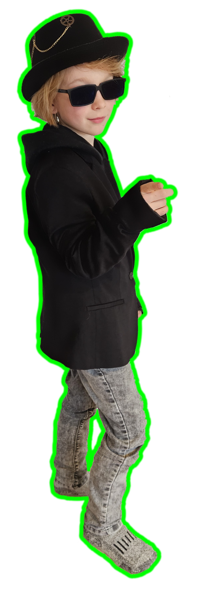

Taro wordt 9 jaar!
Er is een geheimzinnige internationale bende actief,
onder leiding van "De Spin".
Spion Taro wil hen opsporen.
Help je hem mee?
Woensdag 5 februari
12:15 - 17:00
Je wordt thuisgebracht
Niet vergeten:
● Kleding voor in het bos
● Dichte schoenen aandoen
● Kleding aanpassen aan
weersomstandigheden
Rob 06 51438284
Maike 06 55340290